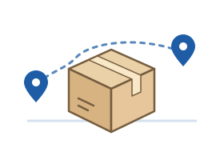

UI/UX 프로그래밍 학습용 가상 서비스
서울배송
서류와 작은 물건을 보내는 과정을 연습합니다.
배송 종류와 지역을 고르고, 입력한 내용을 확인해 보세요.
배송 안내 연습으로 이동
서비스 소개
누가 이용하나요?
서울 안에서 서류나 소형 물품을 보내는 과정을 알아보려는 사용자를 위한 연습 페이지입니다.
- 간단한 선택
배송 종류와 출발·도착 지역을 고릅니다. - 입력 확인
이메일 형식과 선택한 내용을 확인합니다. - 완료 연습
내용을 수정하거나 처음부터 다시 시작할 수 있습니다.
이용 방법 세 단계
- 배송 종류와 출발·도착 지역을 고릅니다.
- 예시 이메일과 필요한 요청 사항을 입력합니다.
- 내용을 확인하고 연습을 완료합니다.
실제 접수 페이지가 아닙니다
주소·전화번호·결제 정보는 입력받지 않습니다. 실제 배송 접수나 이메일 발송도 일어나지 않습니다.
이메일은 student@example.com처럼 예시 주소로 입력해 주세요.
배송 안내 연습
목표: 정보를 입력하고 확인한 뒤 연습 완료 화면에 도달하기
- 1. 시작
- 2. 입력·선택
- 3. 확인
- 4. 완료
배송 연습 내역
실제 접수가 아닌, 이 브라우저에서 직접 완료한 연습만 표시합니다. 최대 50건이며 새로고침 후에도 남습니다.
삭제하면 복구할 수 없습니다. 작성 중인 폼은 지워지지 않습니다.